X-DriverSim: LLM-Powered Interactive Simulation for Diverse Drivers
Simulating diverse human driving styles in mixed traffic environments with apdactive LLM reasoning.
Abstract
While recent advancements in driving simulations have significantly enhanced realism, traffic interaction fidelity remains limited, particularly in modeling diverse human driving styles. Existing methods simplify driving styles to aggressive or cautious behaviors, lacking robustness and real-world complexity. To address this, we introduce X-DriverSim, a closed-loop Autonomous Driving (AD) simulation testing framework featuring a comprehensive driver model. This model decouples core driving abilities from external driving styles. Driving styles are shaped by personality, physical, and environmental factors, with expert AD models managing core tasks, while large language Models (LLMs) generate adaptive, context-sensitive styles that interact with each other and the environment. A key innovation in our approach is the Perception-Driven Style-to-Behavior Transformation (P-S2BT) mechanism, which adjusts the driver’s perception to trigger specific behaviors. To address the abstract nature of driving styles and the complexity of mapping them to behaviors, we employ a Multi-level Dimensionality Reduction Strategy (MDRS) to convert high-level style inputs into behavior descriptions. And then perception is dynamically adjusted through scripts generated, with multi-agent collaboration based on LLMs, eliminating the need for fine-tuning and enhancing efficiency. Experiments across diverse traffic scenarios demonstrate that X-DriverSim effectively detects critical AD system errors, replicates realistic, style-specific behaviors, and provides valuable insights into the impact of varied driving styles on traffic dynamics.
Method
Frameword Overview

X-DriverSim closed-loop simulation framework with Multi-style Driver Model and Agent Collaboration Strategy.
Multi-Agents Models (Stable Vs. Unstable)


Agent-Based Collaborative Models for Driving Style Simulation: Stable vs. Unstable Styles.
Driving Styles Sim Demos
Aggressive driver speeds through traffic and swerves through lanes.
Very cautious driver, maintaining a safe distance at all times.
Driver shows signs of fatigue and reduced attentiveness.
Driver distracted by phone while driving.
Driver shows erratic behavior indicative of intoxication.
Accident Case Studies
Case 1: Aggressive Driving-Induced Collision

Description: At an intersection, an aggressive Jeep in the left lane abruptly cuts into the AV’s right lane to turn. The AV mispredicts the Jeep’s intent, expecting it to yield. However, the Jeep, perceiving the AV as moving slowly and posing minimal risk (as seen in the Impact BEV), executes a sudden lane change, resulting in a collision. This highlights the AV’s difficulty in anticipating aggressive maneuvers and underscores the need for improved risk-aware decision-making. Description: A fatigued driver in a yellow benz rear-ends the AV due to delayed reaction time. When a police car suddenly changes lanes, the cautious AV performs an emergency stop. However, the fatigued Mercedes misperceives the AV’s position and braking intent due to cognitive delay in Impact BEV perception, leading to a late response and an unavoidable rear-end crash. This exposes the AV’s vulnerability to erratic human behavior, like fatigue.
Similar with real world acciden case:
Case 2: Fatigue-Induced Rear-End Collision

Similar with real world acciden case: NHTSA: 2005041508481
Case 3: Distracted Driving-Induced Side Collision

Description: A distracted driver in an orange Carlarmotor collides with the AV while changing lanes. The distracted driver, engaged in an unrelated task (e.g., using a mobile phone), misjudging its position due to delayed situational awareness (Impact BEV perception delay). As a result, the Carlarmotor initiates a right-lane change, assuming the AV is farther behind than it actually is, leading to a direct side collision. This highlights the risks of distraction and the need for AVs to predict human attention lapses.
Similar with real world acciden case: NHTSA: 2007045403168
Quantitative Results
We present the numerical evaluation of different driver behavior models across standard metrics. Traffic Style(TS), Driving Score(DS), Route Completion(RC).
| TS | DS (Interfuser as Tested AD Model) | RC | TS | DS (Interfuser as Tested AD Model) | RC |
|---|---|---|---|---|---|
| Normal | 88.7 | 100.0 | Aggressive | 45.5 | 100.0 |
| Cautious | 78.1 | 100.0 | Drunk | 47.7 | 61.2 |
| Fatigue | 61.9 | 100.0 | Distracted | 64.6 | 100.0 |
| Tested AD Model | TS=Normal(DS, RC) | TS=Aggressive(DS, RC) | TS=Multi(DS, RC) | TS=Mixed(DS, RC) |
|---|---|---|---|---|
| InterFuser | 88.7, 100 | 45.5, 100 | 43.0, 100 | 71.9, 100 |
| TFPP | 90.6, 100 | 52.9, 94.8 | 50.3, 95.8 | 82.3, 100 |
| AIM | 82.4, 100 | 26.7, 100 | 30.3, 100 | 62.2, 100 |
| VAD | 13.9, 34.6 | 10.2, 30.5 | 9.3, 30.1 | 10.0, 32.0 |
| ST-P3 | 5.56, 72.6 | 3.5, 56.0 | 3.8, 55.7 | 4.12, 67.0 |
| LMDrive | 19.8, 26.4 | 11.5, 22.3 | 13.2, 25.4 | 15.5, 25.6 |
Ablation Study
To validate the effectiveness of each component, we conduct ablation experiments on key LLM-driven modules.
| TS | Tested AD Model | DS | RC | Tested AD Model | DS | RC |
|---|---|---|---|---|---|---|
| Normal | Normal Roach Expert | 91.2 | 100 | Aggressive Roach Expert | 79.2 | 100 |
| Normal | Cautious Roach Expert | 88.0 | 100 | Drunk Roach Expert | 78.6 | 100 |
| Normal | Fatigure Roach Expert | 82.4 | 100 | Distracted Roach Expert | 84.2 | 100 |
Multi-Level Dimensionality Reduction Strategy Study

Comparison of Effectiveness Verification of Multi-Level Dimensionality Reduction with and without Strategy.
API Effects
Other Vehicle API
Impact Other Vehicle
Distance
Origin BEV
Impact Other Vehicle
Heading
 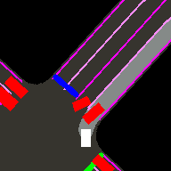
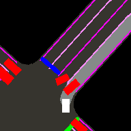
Origin BEV
Impact Other Vehicle
Size
 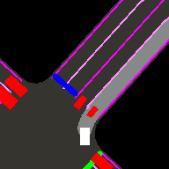
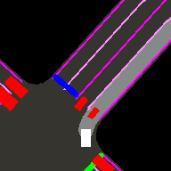
Origin BEV
Impact Other Vehicle
Speed
 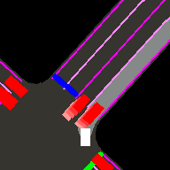
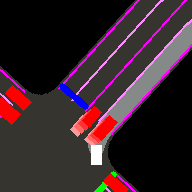
Origin BEV
Add Other Vehicle

Origin BEV
Traffic Light API
Impact Traffic Light Distance
Origin BEV
Impact Traffic Light Size
 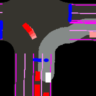
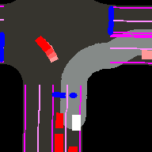
Origin BEV
Impact Traffic Light Status
 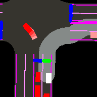
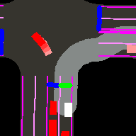
Origin BEV
Add Traffic Light

Origin BEV
Stop Sign API
Impact Stop Sign Distance
Origin BEV
Impact Stop Sign Size

Origin BEV
Add Stop Sign

Origin BEV
Road API
Impact Road Heading
 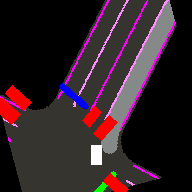
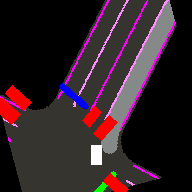
Origin BEV
Impact Road Lane Width
 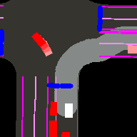
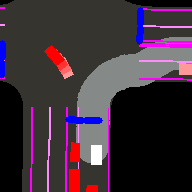
Origin BEV
Impact Road Shape to Curve
Origin BEV
Lane API
Remove Lanes
 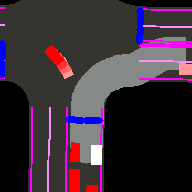
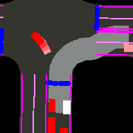
Origin BEV